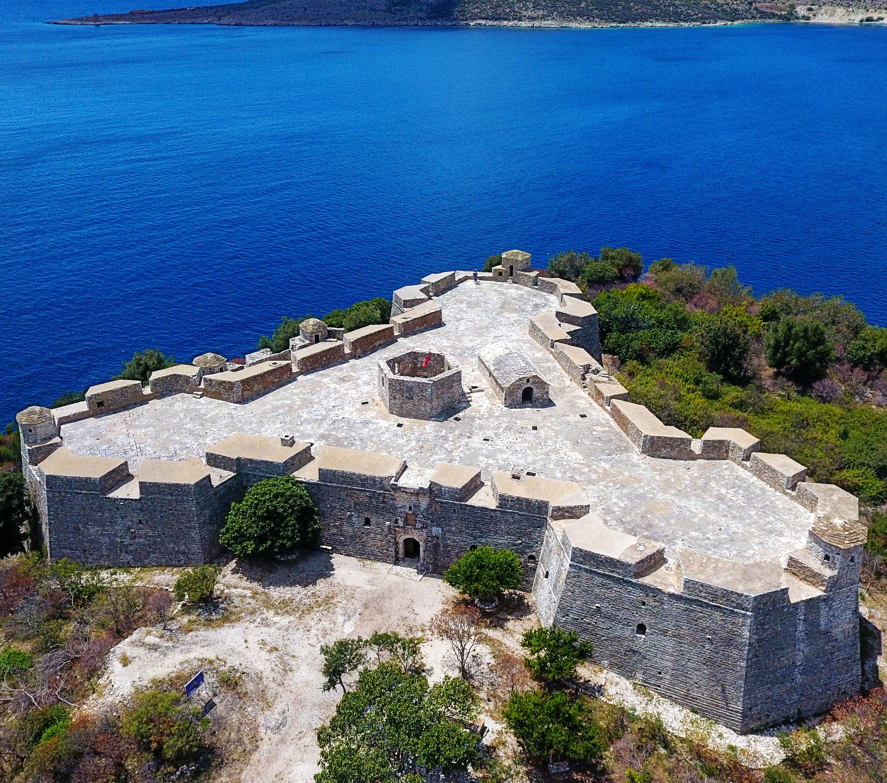

Porto Palermo
Huffington Post ranked Porto Palermo first among 15 Undiscovered European Destinations for 2014.The area together with Llamani beach will be proclaimed a protected area holding the status of Protected Landscape by the Albanian Government.

The castle of Ali Pashe Tepelena In Himare
The castle is near Himarë in southern Albania. It is situated in the bay of Porto Palermo, a few kilometers south of Himarë.The well preserved castle is commonly, but wrongly, asserted, by guide books and the local tourist guides, to have been built in early 19th century by Ali Pasha of Tepelena.